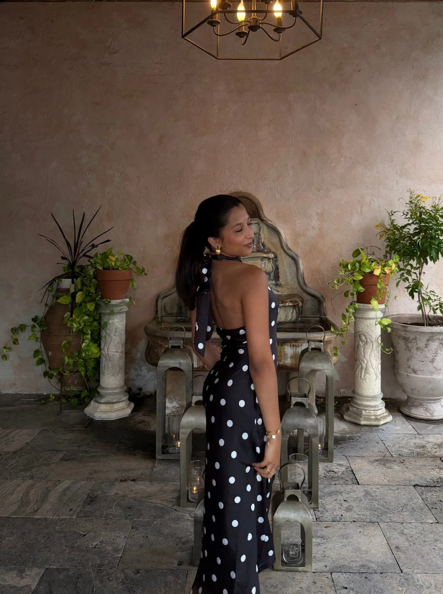
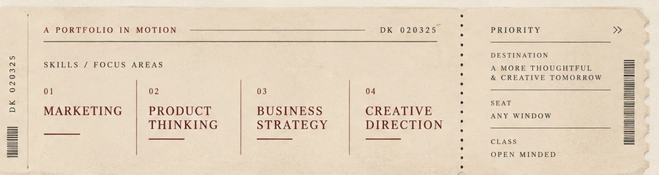

02

About Diya
I’m Diya, a business and music industry student at USC who loves blending creativity with strategy. I’m especially interested in branding, digital marketing, and content creation, and I’ve explored those interests through social media campaigns, campus marketing, and brand partnerships—from leading marketing for my competitive dance team to working as a Social Media Intern at Love Advertising this past summer.
I’m curious, detail-oriented, and always thinking about how an idea could connect with people more clearly. More recently, I’ve also become interested in applying that same mix of creative and strategic thinking to products and broader business problems.

Marketing. Product Thinking. Business Strategy. Creative Direction. USC Marshall. Los Angeles.